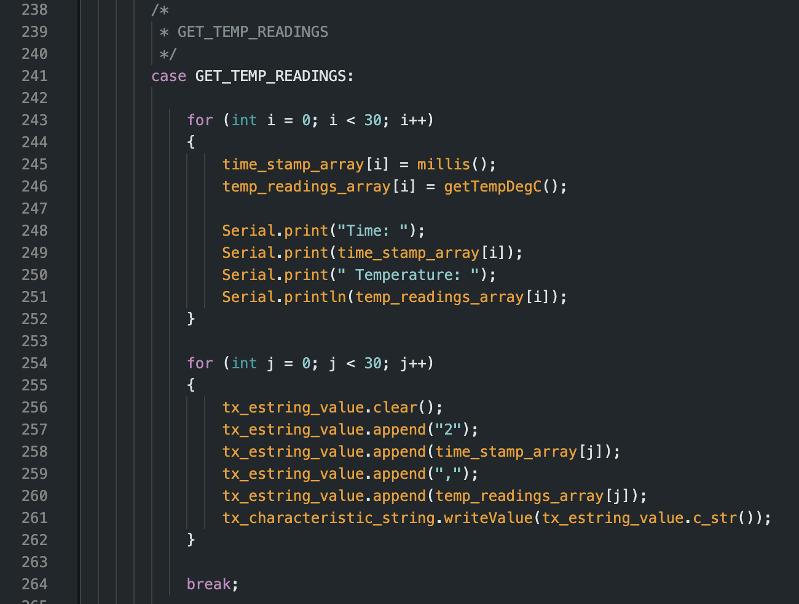

ECE 5160 Fast Robots
Hello! My name is Katherine Hsu, and I'm a Master of Engineering Computer Science student at Cornell University. My research interest includes artificial intelligence, robotics, and embedded systems!
Hello! My name is Katherine Hsu, and I'm a Master of Engineering Computer Science student at Cornell University. My research interest includes artificial intelligence, robotics, and embedded systems!

The goal of this lab is get familiar with using the ArduinoIDE, Artemis Nano board, and BLE communication!
For the prelab, I added the latest version of the Sparkfun Appollo3 boards manager to the ArduinoIDE on my laptop.
For this task, I connected the Artemis Nano board to my laptop and selected the “RedBoard Artemis Nano” board and the corresponding serial port on the ArduinoIDE to ensure proper serial connections.
For this task, I used the simple Blink example code to test the Artemis board.
For this task, I used the Example04_Serial code to test the serial communication functionality of the Artemis board. Using the serial monitor in the ArduinoIDE, I confirmed that the board can print and echo back messages.
For this task, I used the Example2_analogRead code to check if the temperature sensor is functioning properly. One challenge that I ran into while doing this task was that my hands were too cold to drastically change the chip’s temperature. As shown in the video, the temperature changed from around 32288 to 32908.
For this task, I used the Example1_MicrophoneOutput code to check if the microphone is functioning properly. In the video, I played the A4 note on my phone to check if the highest frequency on the serial monitor would change.
Using the example code from Task 5 as a template, I was able to program the Artemis board to react to the C note by blinking the on-board LED. Additionally, I checked the frequency of the C5 note using the Example1_MicrophoneOutput code, which showed a frequency of 526 Hz.
Note: I used the Tuner Lite app on my phone to play the different musical notes.

For the prelab, I set up a virtual environment called FastRobots_ble and installed the required packages in the environment using the command
pip install numpy pyyaml colorama nest_asyncio bleak jupyterlab
Note that Matplotlib was installed later in the lab!
Afterward, I added the codebase to the folder and successfully started the Jupyter server.
Lastly, I installed the ArduinoBLE library in the ArduinoIDE and flashed the ble_arduino.ino code from the codebase to the Artemis Nano board, which allowed the board to print its MAC address on the serial monitor.

Using the function uuid4(), I was able to generate a unique UUID.
Then, I updated the files with the correct MAC and UUID addresses!
In connection.yaml
artemis_address: 'c0:07:80:99:a1:44'
ble_service: 'b6c05544-1f26-40f3-a096-4e730eb9f3d2'
In ble_ardruino.ino
#define BLE_UUID_TEST_SERVICE "b6c05544-1f26-40f3-a096-4e730eb9f3d2"
For this task, I programmed the ECHO function so that when the robot (Artemis board) receives a string “Hi!!!” it would return “Robot says -> Hi!!!”

For this task, I programmed the SEND_THREE_FLOATS function to return the three float values extracted from the command.
For this task, I added a command GET_TIME_MILLIS that returns the time since the program started in milliseconds using the function millis().
For this task, I programmed the notif_handler function and added the start_notify function so that the program would automatically run the notif_handler function whenever the RX_STRING characteristics is updated.
With the notification handler, the robot can send commands to the computer without the computer initiating a command first. This is useful for the tasks below since we will be continuously receiving time and temperature data from the robot.
For this task, I created a command called LOOP_TIME that collects the time data on the robot and sends them to the computer for 3 seconds. For debugging purposes, I also printed the time to the serial monitor on the robot side.
Using a spreadsheet, I was able to calculate the effective data transfer rate.
183 entries / (669857 ms - 666853 ms) = 0.0609 entries / ms = 60.9 entries / second

For this task, I created a global variable array called time_stamp_array with a size of 30 on the robot side. Then, I created a command called SEND_TIME_DATA that stores 30 time data in the array and sends the data over to the computer once the robot finishes collecting data.
Effective data transfer rate = 30 entries / (749290 ms - 749260 ms) = 1 entry / ms = 1000 entries / second

For this task, I added another global variable array called temp_readings_array with a size of 30 on the robot side. Then, I created another command called GET_TEMP_READINGS that uses a similar logic as the SEND_TIME_DATA command, except that it is storing and sending data in two arrays (time + temperature) concurrently.

In order for the notification handler to parse the strings properly. I added indicators to the beginning of the data string that is being sent over from the robot. Therefore, since Task 6 is only sending the time data, I added “1” to the beginning of the string so that the computer knows that it is only expecting one data. Similarly, I added “2” to the beginning of the data string for Task 7 since the notification handler needs to parse the time and temperature data. By using If Else statements, the notif_handler function can identify different types of strings that the robot sends.
The first method records data at a rate of 60.9 entries per second. In comparison, the second method records data at a rate of 1000 entries per second, which is significantly faster than the first method. Note that the sample size for the second method is only 30 entries in comparison to the 183 entries for the first method.
The Artemis board has 384 kB of RAM and each int has a size of 4 B.
384 kB / 4kB = 96 int data
Therefore, we can store approximately 96 int type data on the board before running out of memory. However, it is important to note that other parts of the code would also take up memory on the board. So, the actual amount of data we can store would be smaller than 96.
Since each char is 1 Byte of data, I decided to use the message “hello” to collect the data rate for responses ranging from 5 bytes to 120 bytes. In the end, I was able to collect 24 data points and use the Matplotlib library to plot a scatter plot of response size vs. data rate.

According to the plot, the data rate and response size have a positive correlation.

Therefore, the data rate of shorter responses is slower than the data rate of longer responses. This is because short packets introduce more overhead than larger packets. In conclusion, larger responses can help reduce overhead because it is effectively using the data transmission space.
To test the reliability when the robot sends data at a higher rate, I added a command called RELIABILITY that sends over 1000 messages to the computer. In order to test a fast transmission rate, I made sure that there are no unnecessary codes in between each data transmission.
Afterward, I created a function to check if the computer read all 1000 messages sent from the robot correctly.
The results show that the communication between the computer and the robot is reliable!
Through this lab, I was able to get familiar with using the Artemis Nano board to communicate with the computer via BLE!
Thank you to Professor Helbling and the TAs for their help during lab sessions. Furthermore, I referenced Nila Narayan and Mikayla Lahr’s websites!